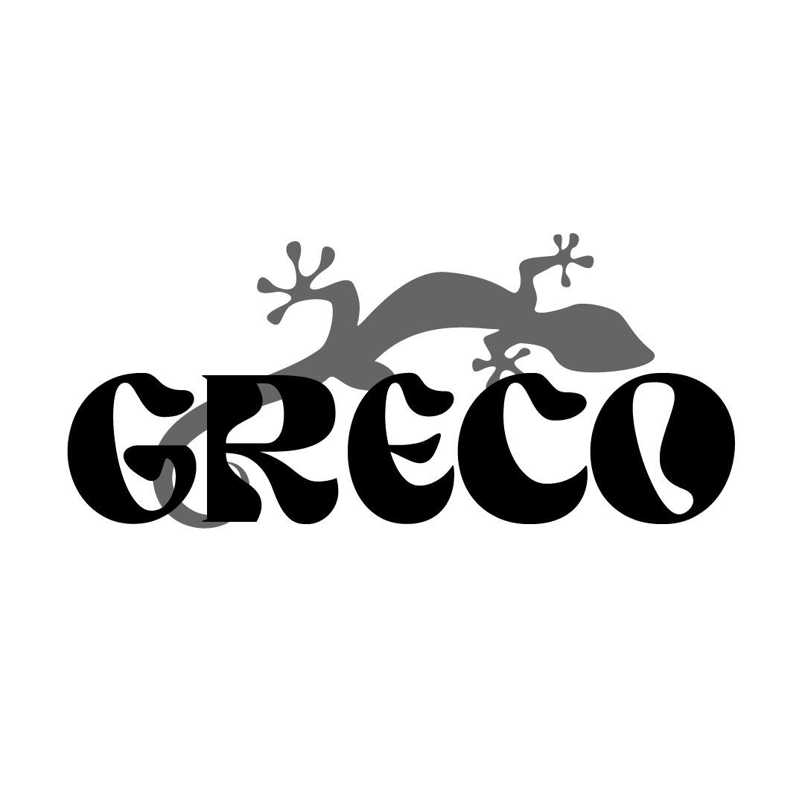

<div class="encabezado">

    <div class="menuicono">
        <!--  -->
    </div>

    <div class="menu">
        @if(serviciologin.eslogueado()){
        <a href="" class="botonmenu" routerLink="verperfil"></a> <!--declaramos el link con la palabra reservada RouterLink, nos aseguramos que coincida el nombre con el path en nuestro app.routes.ts  -->
        <a href="" class="botonmenu" routerLink="inventario"></a>
        <a href="" class="botonmenu" routerLink="arduino"></a>
        @if(serviciologin.privilegiosadministrador()){
        <a href="" class="botonmenu" routerLink="usuario"></a>
        }
        }
    </div>

    <div class="menusesion">
        <!-- @if(serviciologin.eslogueado()){
        <button (click)="serviciologin.cerrarsesion()">
            <a>Cerrar sesión</a>
        </button>
        } -->
    </div>

</div>


